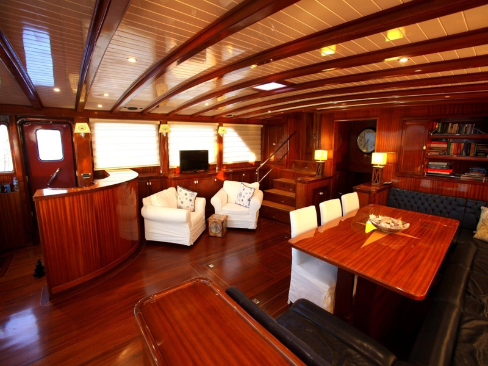
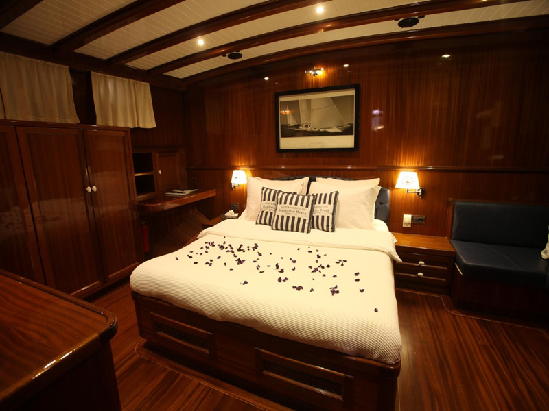

☸ about

This is the official website of the owner of the Queen of Datca (pronounced as Dacha) – a classic yacht built in 2009 by Yener Yat in Turkey. The Queen was built as a true sailing yacht in the shape of a traditional Turkish gulet, to offer her passengers a full sailing experience in the utmost style and comfort. The Queen was built with love and passion, and no expense spared.
All sailing equipment is of the highest specifications, and 1000 sq. metres of sails will let you enjoy the wind and speed as it should be. At the same time, the Queen of Datca is extremely well equipped to provide for your comfort. As you’d expect from a 36m long gulet, there is ample deck space with a seating area and cushioned spaces, water toys including water skis, paddle boards, a jet ski, etc., and comfortable and spacious interiors with a satellite TV and entertainment system. The Queen can take up to 10 passengers in 5 cabins (two VIP, one double and two twin that can also be converted to doubles).
The Queen of Datca is special in many ways. Her shape and rigging equipment mean sailing character, her interior means comfort for the passengers, and her equipment and the Maltese flag – safety at sea and assurance of an EU vessel licenced to operate anywhere in the world. This gives you the true freedom to cross any borders and choose any destinations. And our crew of 6 people is committed to making your holiday a perfect one.
The Queen of Datca is the ultimate choice for elegant cruising or sailing, if you want the best of both worlds. She is available for charter in Croatia, Greek islands and Turkey.